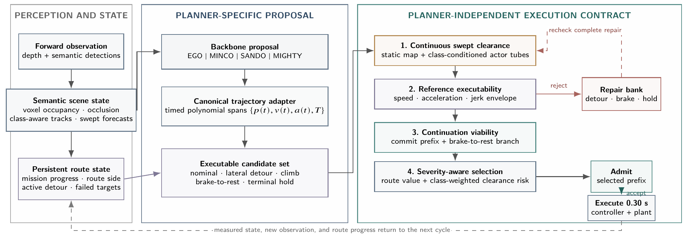
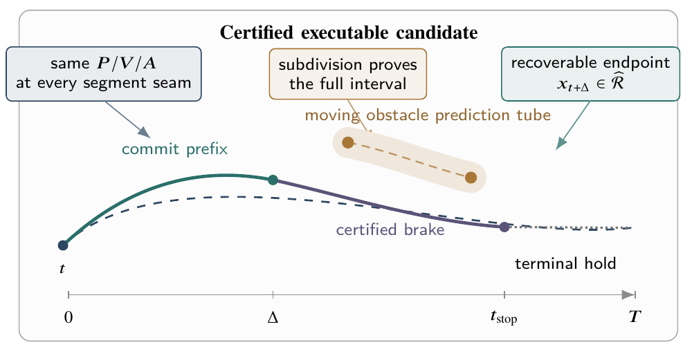

Persistent progress around buildings
Show a matched detour with the same map, start and goal. Overlay route memory, travelled path and goal distance to make local stalling and sustained progress visible.
Anonymous review version

Fast local optimization alone is insufficient for reliable drone navigation in cluttered urban environments. A smooth trajectory can be safe only at sampled times, make little route progress, or leave no useful response after the next observation. We present TRUCE (Trajectory Runtime Unified Contract for Execution), a closed-loop architecture that gives different trajectory backbones one execution contract. Its scene state combines local occupancy, semantic actor classes, predicted motion, and persistent route context. Class-conditioned hard margins and severity-weighted ranking make proximity to a person more consequential than proximity to static structure. EGO, MINCO, SANDO, or MIGHTY supplies timed motion through a canonical adapter. Continuous-time swept occupancy, executability, continuation, and progress gates select an executable prefix; rejected proposals enter a structured recovery bank.
We evaluate the completed EGO-backed system on a stratified 130-seed benchmark: 100 point-mass planning tasks over 20 urban maps and 30 fixed-model quadrotor rollouts. Both strata use a forward 120°, 20 m occlusion-aware sensor; speed above the nominal 6 m/s setting is diagnostic rather than a failure. EGO+TRUCE reaches 127/130 seeds with one pedestrian contact and no invalid runs, compared with 26/130, 16 contacts, and two invalid runs for native EGO. In the point-mass stratum, it reaches 100/100 and reduces mean episode duration from 40.743 to 22.182 s. In the dynamics stratum, it reaches 27/30 versus 12/30, and 21 arrivals pass the strict fixed-model numerical flight audit. Its median contract decision takes 8.49 ms; the measured 338.27 ms full simulation step is dominated by depth, map, and evidence processing. The benchmark supplies simulator semantic labels after visibility filtering, so it evaluates class-aware planning but not end-to-end detector recall.
The backbone proposes timed motion; TRUCE determines what can be executed now. Canonical polynomial spans preserve physical timing and derivatives across planner representations. Four checks combine static and dynamic swept clearance, reference executability, a represented continuation, and progress-aware selection.

Class-conditioned margins and severity weights distinguish moving people from static structure while keeping represented obstacles as hard collision constraints. Persistent route-side state and detour waypoints preserve progress around buildings, where moving toward the goal in a straight line can lead to repeated stalls.
A structured bank proposes lateral detours, climbs, braking and terminal holds. Every recovery candidate passes the same admission checks as a nominal proposal. Only a 0.30 s prefix is released before the scene and measured state are reconsidered. The continuation set is finite: exhausting that search does not prove that no physically feasible action exists.
The manuscript reports a matched EGO comparison across 100 point-mass tasks and 30 quadrotor dynamics rollouts. These strata share a forward 120° field of view and a 20 m sensing range; time and latency remain separate because their execution models differ.
| Evaluation | Native EGO | EGO + TRUCE | Change |
|---|---|---|---|
| Point-mass · 100 seeds | 14/100 | 100/100 | +86.0 pp |
| Quadrotor dynamics · 30 seeds | 12/30 | 27/30 | +50.0 pp |
| Aggregate · 130 seeds | 26/130 (20.0%) | 127/130 (97.7%) | +77.7 pp |
| Metric | Native EGO | EGO + TRUCE | Change |
|---|---|---|---|
| Contacts · all 130 seeds ↓ | 16 | 1 | −93.8% |
| Invalid runs · all 130 seeds ↓ | 2 | 0 | −100.0% |
| Mean episode duration · point-mass ↓ | 40.743 s | 22.182 s | −45.6% |
| Median tracking error · dynamics ↓ | 1.598 m | 0.187 m | −88.3% |
| Median contract decision · dynamics ↓ | 0.14 ms | 8.49 ms | +5964.3% |
| Median full simulation step · dynamics ↓ | 321.96 ms | 338.27 ms | +5.1% |
| Strict audited arrivals · dynamics ↑ | 0/30 | 21/30 | +70.0 pp |
Green denotes an improvement and red an added computational cost; signed values and metric labels also express the direction. “pp” means percentage points. Relative changes follow the rounded values in the manuscript. Goal reach is distinct from a strict audited arrival.
The reported EGO+TRUCE dynamics outcomes include one pedestrian contact and two timeouts. Six of its 27 arrivals fail the fresh-geometric-admission requirement and are excluded from the 21 strict audited arrivals.
Matched MINCO, SANDO, MIGHTY and EGO+Gatekeeper results are pending in this manuscript snapshot. Planner independence is an architectural property; the reported empirical comparison currently covers EGO.
Incoming. Demonstrations are being prepared; the sections below describe the planned videos.
A synchronized native EGO / EGO+TRUCE walkthrough: forward observation, semantic obstacles, proposed trajectory, admitted prefix and recovery response. End with the reported benchmark outcomes.
Show a matched detour with the same map, start and goal. Overlay route memory, travelled path and goal distance to make local stalling and sustained progress visible.
Show a pedestrian emerging into the visible region, class-conditioned prediction envelopes, proposal rejection and the selected response.
Slow down one decision cycle. Distinguish the executed prefix from the stored continuation and align the reference with tracking error and vehicle constraints.
Use the reported dynamics seed 7 contact and a timeout case. Mark recovery depletion and distinguish reaching the goal from satisfying every strict audit predicate.
All planned demonstrations are simulation results. Matched videos will use the same scenario, observation setup and playback rate, with the execution model labelled.
The benchmark uses visibility-filtered simulator semantics, one fixed quadrotor model and a finite continuation search. Safety statements depend on the represented obstacle envelopes and tracking assumptions. The evidence-heavy simulator misses its 100 ms wall-clock budget; these results do not establish end-to-end real-time performance or hardware flight safety. Additional planner pairs, perception evaluation, held-out scenarios and hardware flights remain to be validated.
Incoming. Citation details will be available after the anonymous review period.